DICK'S TSHQ
Fan Wear Redesign
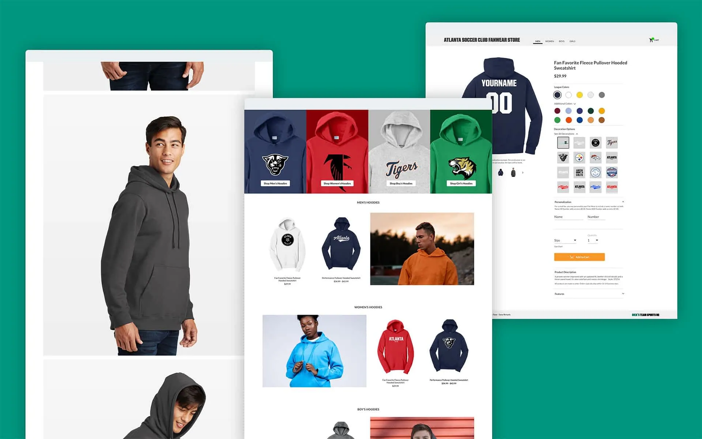
In early 2018, DICK'S TSHQ launched a standalone fan wear store for made-to-order team apparel. I served as lead designer alongside the ecommerce dev team and product manager.
The Challenge
The store looked outdated, lacked visibility, and underperformed against modern ecommerce standards. The goal: rebuild it into an experience users could trust and actually convert with.
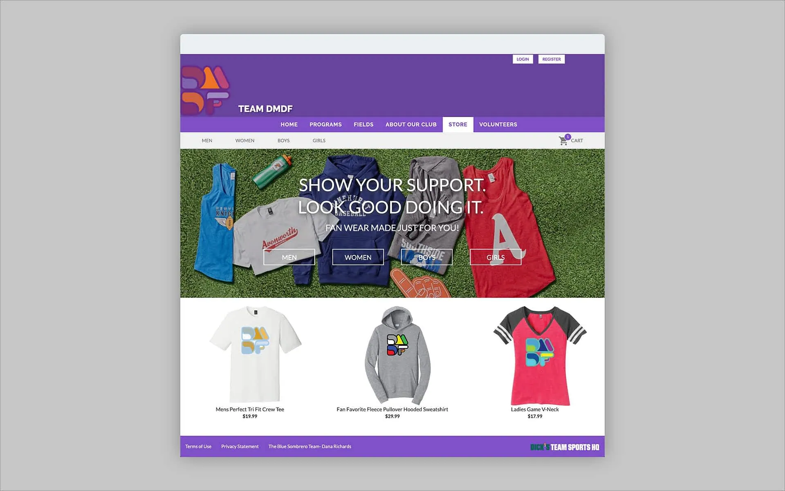
Legacy fan wear UI.
Research
We mapped the customer journey, benchmarked against leaders such as Nike, Adidas, and Amazon, and mined support data to pinpoint where users were dropping off and why.
Problem Areas and Assumptions
Hidden shipping costs and a mandatory login wall were killing conversions before users ever reached checkout.
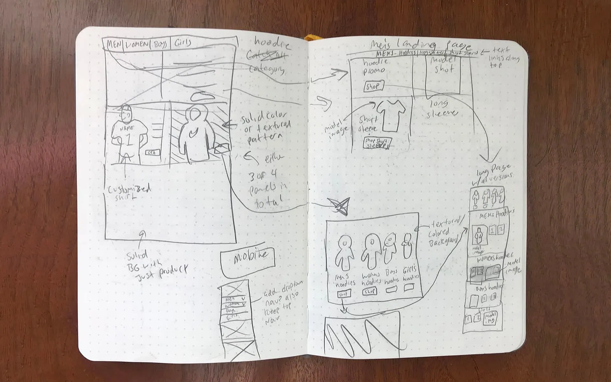
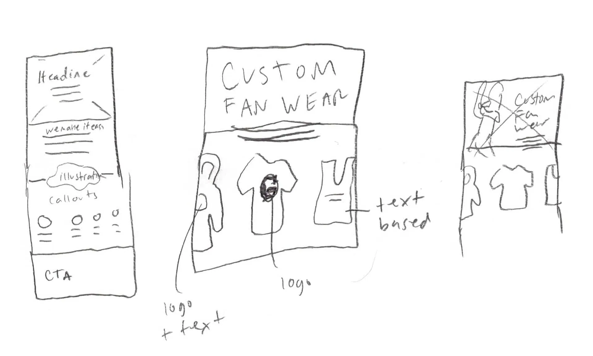
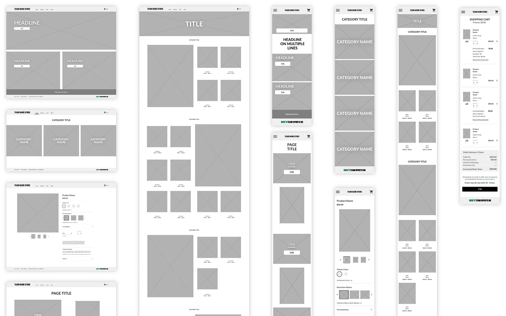
Early sketches and wireframes.
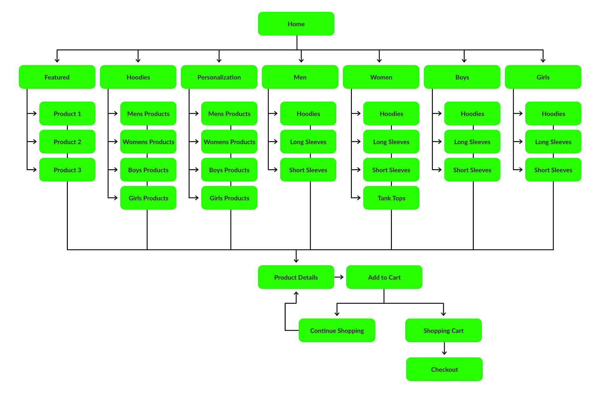
User flow.
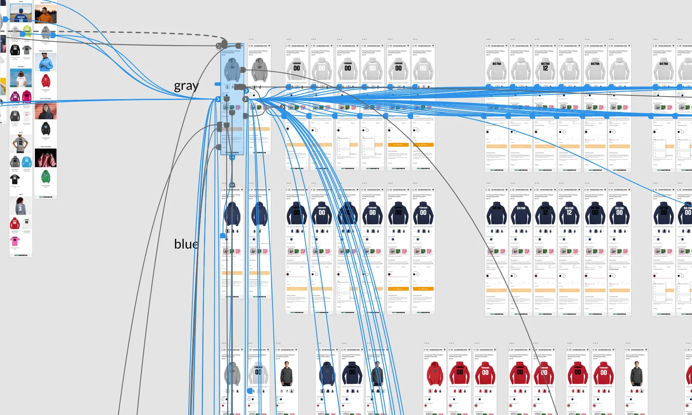
Mobile prototype.
Design Solutions
Personalization
Real-time previews, a clear removal option, and live price updates gave users full confidence in what they were ordering.
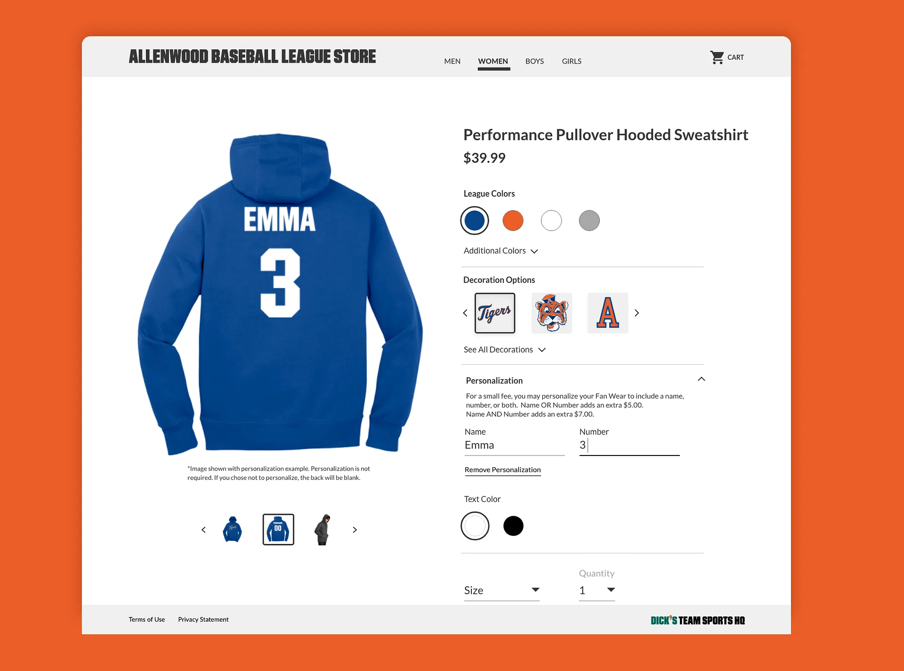
Personalization.
Landing Pages
Seasonal landing pages spotlighting hoodies, tanks, and other key items made the catalog feel fresh and well-stocked.
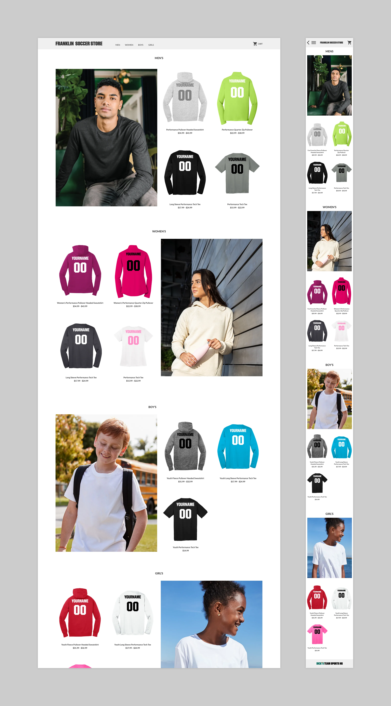
Landing pages for personalization.
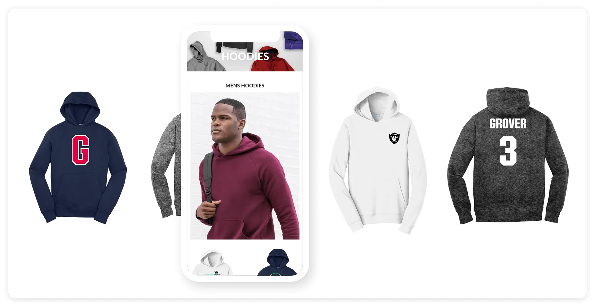
Home screen.
Visual Feedback
Cart overlay confirmations let users continue shopping or jump straight to checkout, reducing friction at a critical moment.
Shopping Cart and Checkout Abandonment
Removing the account requirement opened the store to anyone — no login, no barrier, and no lost sales.
Shipping costs surfaced upfront, with promotional variations A/B tested to find the highest-converting presentation.
Guest checkout.
Photography
Lifestyle photography and custom illustrations replaced generic product shots, giving the store a brand identity worth trusting.
Illustrations found throughout TSHQ products.
Results
Launched in early 2019, the redesign delivered fast: a 10% lift in personalized item sales, a ~20% reduction in cart abandonment, and 32% year-over-year sales growth by mid-August.
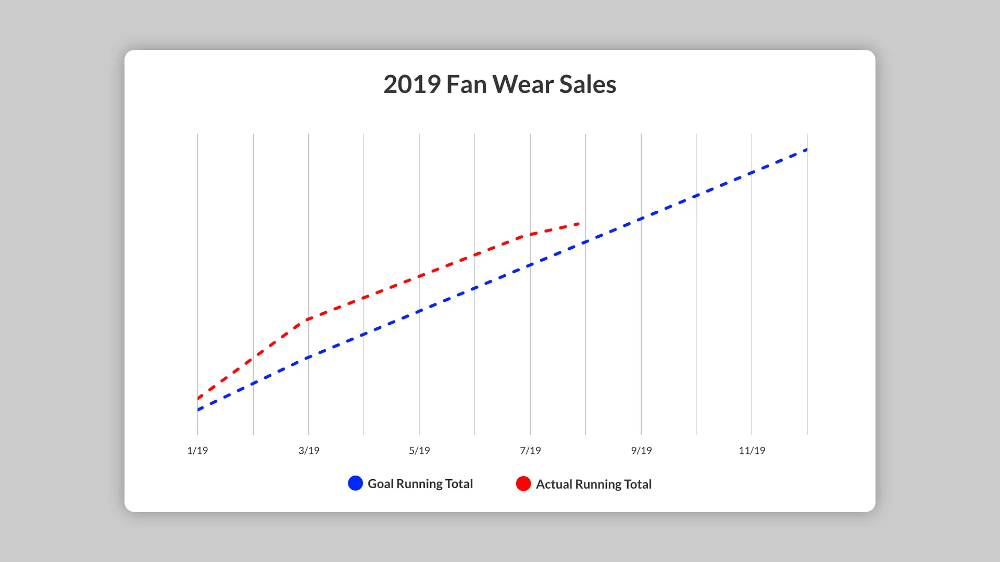
As of mid August, with 4.5 months left in the calendar year, we are already at 32% YoY (vs 2018) growth in sales!